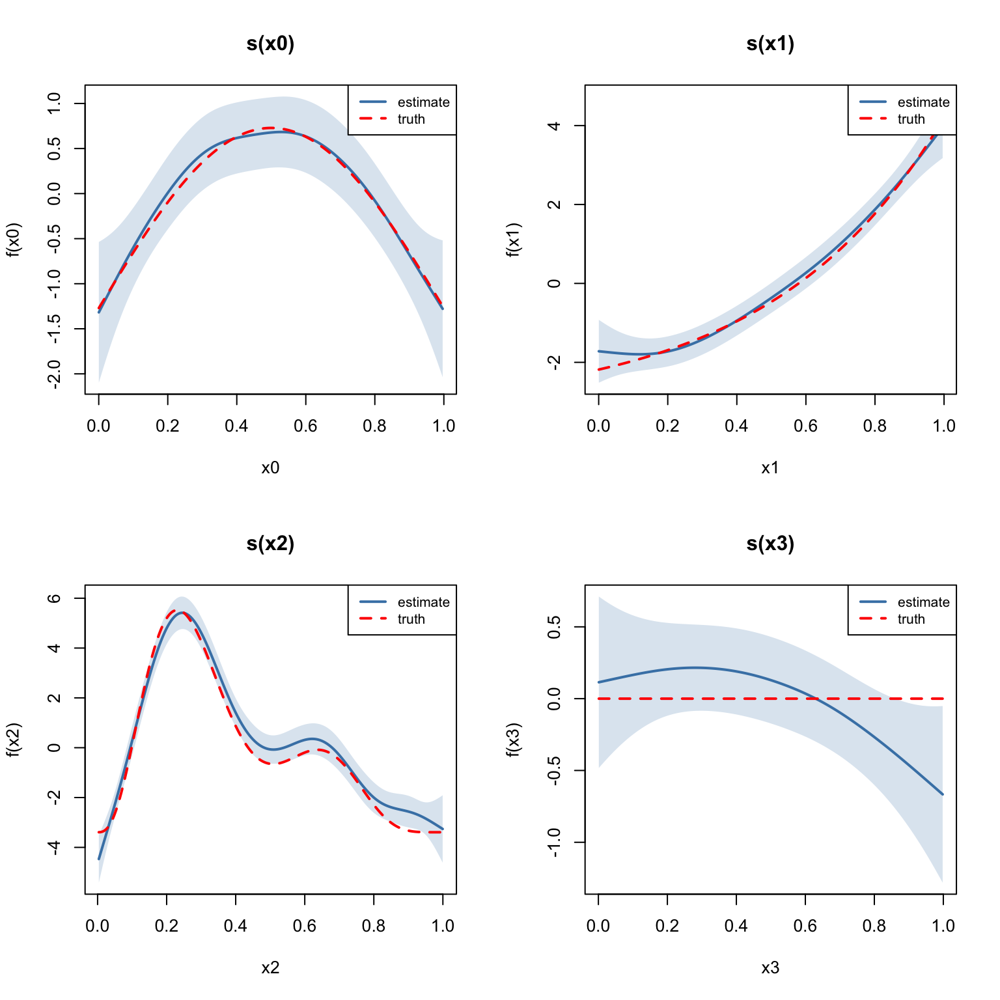

library(mgcv)Loading required package: nlmeThis is mgcv 1.9-3. For overview type 'help("mgcv-package")'.library(gratia)
library(ggplot2)One of the key strengths of GAMs is the ability to include multiple smooth terms additively. The model:
\[ y_i = \beta_0 + f_0(x_{0i}) + f_1(x_{1i}) + f_2(x_{2i}) + f_3(x_{3i}) + \varepsilon_i \]
estimates each smooth function \(f_j\) simultaneously, with automatic smoothness selection for each term.
This vignette uses the classic Gu–Wahba simulation (equivalent to gamSim(eg = 1) in mgcv) with four smooth functions of varying complexity.
library(mgcv)Loading required package: nlmeThis is mgcv 1.9-3. For overview type 'help("mgcv-package")'.library(gratia)
library(ggplot2)The four test functions are:
df <- read.csv("../data.csv")
n <- nrow(df)
x0 <- df$x0; x1 <- df$x1; x2 <- df$x2; x3 <- df$x3
y <- df$y
f0 <- function(x) 2 * sin(pi * x)
f1 <- function(x) exp(2 * x)
f2 <- function(x) 0.2 * x^11 * (10 * (1 - x))^6 + 10 * (10 * x)^3 * (1 - x)^10
f3 <- function(x) rep(0, length(x))
# Center the true functions for identifiability
f0_vals <- f0(x0); f0_vals <- f0_vals - mean(f0_vals)
f1_vals <- f1(x1); f1_vals <- f1_vals - mean(f1_vals)
f2_vals <- f2(x2); f2_vals <- f2_vals - mean(f2_vals)
f3_vals <- f3(x3)
head(df) y x0 x1 x2 x3
1 -4.4742515 0.9148060 0.02270001 0.9090475 0.4018804
2 -2.7697245 0.9370754 0.51323953 0.8999248 0.4322142
3 6.4688919 0.2861395 0.63072615 0.1923493 0.6636044
4 -1.7536068 0.8304476 0.41877162 0.5322903 0.1823693
5 0.1671775 0.6417455 0.87926595 0.5221247 0.8383388
6 2.3332107 0.5190959 0.10798707 0.1603357 0.9173730m <- gam(y ~ s(x0) + s(x1) + s(x2) + s(x3), data = df, method = "REML")
summary(m)
Family: gaussian
Link function: identity
Formula:
y ~ s(x0) + s(x1) + s(x2) + s(x3)
Parametric coefficients:
Estimate Std. Error t value Pr(>|t|)
(Intercept) 0.02824 0.10505 0.269 0.788
Approximate significance of smooth terms:
edf Ref.df F p-value
s(x0) 3.425 4.244 8.828 8.78e-07 ***
s(x1) 3.221 4.003 67.501 < 2e-16 ***
s(x2) 7.905 8.685 67.766 < 2e-16 ***
s(x3) 1.885 2.359 2.642 0.0636 .
---
Signif. codes: 0 '***' 0.001 '**' 0.01 '*' 0.05 '.' 0.1 ' ' 1
R-sq.(adj) = 0.685 Deviance explained = 69.8%
-REML = 886.93 Scale est. = 4.4144 n = 400The gratia::overview() function summarizes all smooth terms:
overview(m)
Generalized Additive Model with 4 terms
term type k edf statistic p.value
<chr> <chr> <dbl> <dbl> <dbl> <chr>
1 s(x0) TPRS 9 3.42 8.83 < 0.001
2 s(x1) TPRS 9 3.22 67.5 < 0.001
3 s(x2) TPRS 9 7.90 67.8 < 0.001
4 s(x3) TPRS 9 1.88 2.64 0.063622Per-smooth EDF:
cat("Per-smooth EDF:\n")Per-smooth EDF:for (i in seq_along(m$smooth)) {
cat(sprintf(" %-12s EDF = %.2f\n", m$smooth[[i]]$label, pen.edf(m)[i]))
} s(x0) EDF = 3.42
s(x1) EDF = 3.22
s(x2) EDF = 7.90
s(x3) EDF = 1.88cat(sprintf("\nTotal model EDF: %.2f\n", sum(m$edf)))
Total model EDF: 17.44cat(sprintf("Deviance explained: %.1f%%\n", summary(m)$dev.expl * 100))Deviance explained: 69.8%We plot each smooth estimate alongside the corresponding true function:
true_fns <- list(f0, f1, f2, f3)
x_vars <- c("x0", "x1", "x2", "x3")
x_data <- list(x0, x1, x2, x3)
f_centered <- list(f0_vals, f1_vals, f2_vals, f3_vals)
par(mfrow = c(2, 2))
for (i in 1:4) {
se <- smooth_estimates(m, smooth = paste0("s(", x_vars[i], ")"), n = 200)
x_grid <- se[[x_vars[i]]]
# True function on grid, centered
f_grid <- true_fns[[i]](x_grid)
f_grid <- f_grid - mean(f_grid)
plot(x_grid, se[[".estimate"]], type = "l", lwd = 2, col = "steelblue",
ylim = range(c(se[[".estimate"]] - 2 * se[[".se"]], se[[".estimate"]] + 2 * se[[".se"]], f_grid)),
xlab = x_vars[i], ylab = paste0("f(", x_vars[i], ")"),
main = paste0("s(", x_vars[i], ")"))
polygon(c(x_grid, rev(x_grid)),
c(se[[".estimate"]] - 2 * se[[".se"]], rev(se[[".estimate"]] + 2 * se[[".se"]])),
col = adjustcolor("steelblue", alpha.f = 0.2), border = NA)
lines(x_grid, f_grid, lty = 2, lwd = 2, col = "red")
legend("topright", c("estimate", "truth"), lty = c(1, 2),
col = c("steelblue", "red"), lwd = 2, cex = 0.8)
}Warning: The `smooth` argument of `smooth_estimates()` is deprecated as of gratia
0.8.9.9.
ℹ Please use the `select` argument instead.
par(mfrow = c(1, 1))Note that \(f_3(x_3) = 0\) (the null smooth), and the model should estimate it as approximately flat with an EDF close to 0–1.
Concurvity is the smooth analogue of collinearity — it measures how well each smooth can be approximated by the other smooth terms. Values close to 1 indicate potential confounding.
conc <- concurvity(m, full = TRUE)
print(round(conc, 3)) para s(x0) s(x1) s(x2) s(x3)
worst 0 0.127 0.130 0.131 0.169
observed 0 0.042 0.053 0.052 0.065
estimate 0 0.082 0.060 0.081 0.052Since our covariates are independent (uniform draws), concurvity should be low.
Pairwise concurvity:
conc_pw <- concurvity(m, full = FALSE)
print(lapply(conc_pw, function(x) round(x, 3)))$worst
para s(x0) s(x1) s(x2) s(x3)
para 1 0.000 0.000 0.000 0.000
s(x0) 0 1.000 0.059 0.086 0.060
s(x1) 0 0.059 1.000 0.056 0.076
s(x2) 0 0.086 0.056 1.000 0.084
s(x3) 0 0.060 0.076 0.084 1.000
$observed
para s(x0) s(x1) s(x2) s(x3)
para 1 0.000 0.000 0.000 0.000
s(x0) 0 1.000 0.023 0.021 0.010
s(x1) 0 0.014 1.000 0.014 0.027
s(x2) 0 0.014 0.012 1.000 0.027
s(x3) 0 0.014 0.015 0.018 1.000
$estimate
para s(x0) s(x1) s(x2) s(x3)
para 1 0.000 0.000 0.000 0.000
s(x0) 0 1.000 0.029 0.019 0.006
s(x1) 0 0.033 1.000 0.023 0.017
s(x2) 0 0.040 0.011 1.000 0.027
s(x3) 0 0.011 0.015 0.039 1.000Does the basis dimension k matter? Let us refit with smaller and larger k:
for (k_val in c(5, 10, 20, 30)) {
mk <- gam(y ~ s(x0, k = k_val) + s(x1, k = k_val) +
s(x2, k = k_val) + s(x3, k = k_val),
data = df, method = "REML")
edfs <- round(pen.edf(mk), 2)
dev <- round(summary(mk)$dev.expl * 100, 1)
cat(sprintf("k=%d EDF=[%s] Dev.Expl=%.1f%%\n",
k_val, paste(edfs, collapse = ", "), dev))
}k=5 EDF=[2.98, 3.06, 3.97, 1.47] Dev.Expl=66.0%
k=10 EDF=[3.42, 3.22, 7.9, 1.88] Dev.Expl=69.8%
k=20 EDF=[3.45, 3.25, 9.99, 1.87] Dev.Expl=70.2%
k=30 EDF=[3.46, 3.25, 10.23, 1.87] Dev.Expl=70.2%As long as k is large enough to capture the true complexity, results are similar — the penalty takes care of the rest.
In this vignette we:
overview()kThe next vignette covers non-Gaussian response distributions.